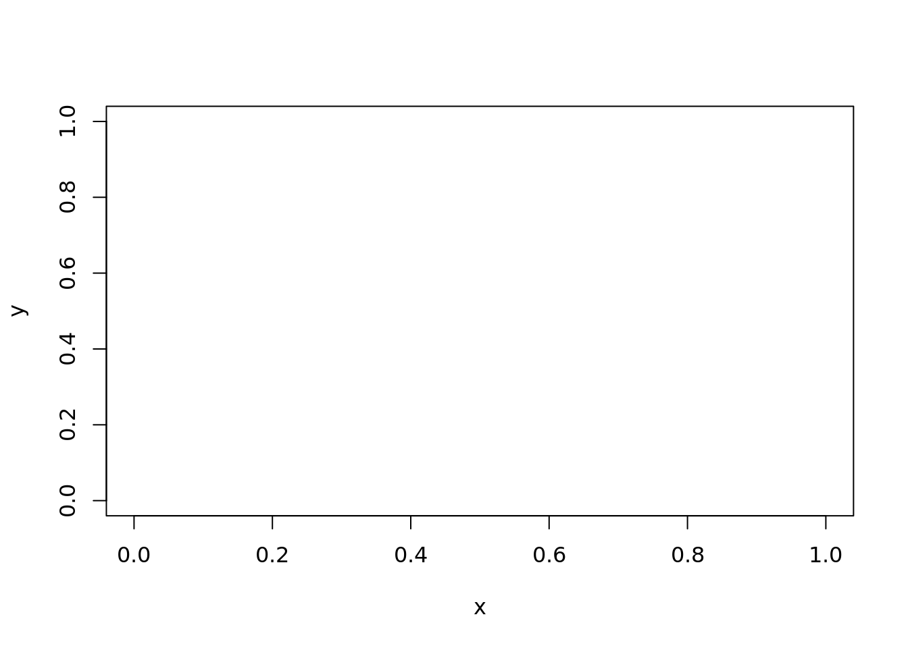
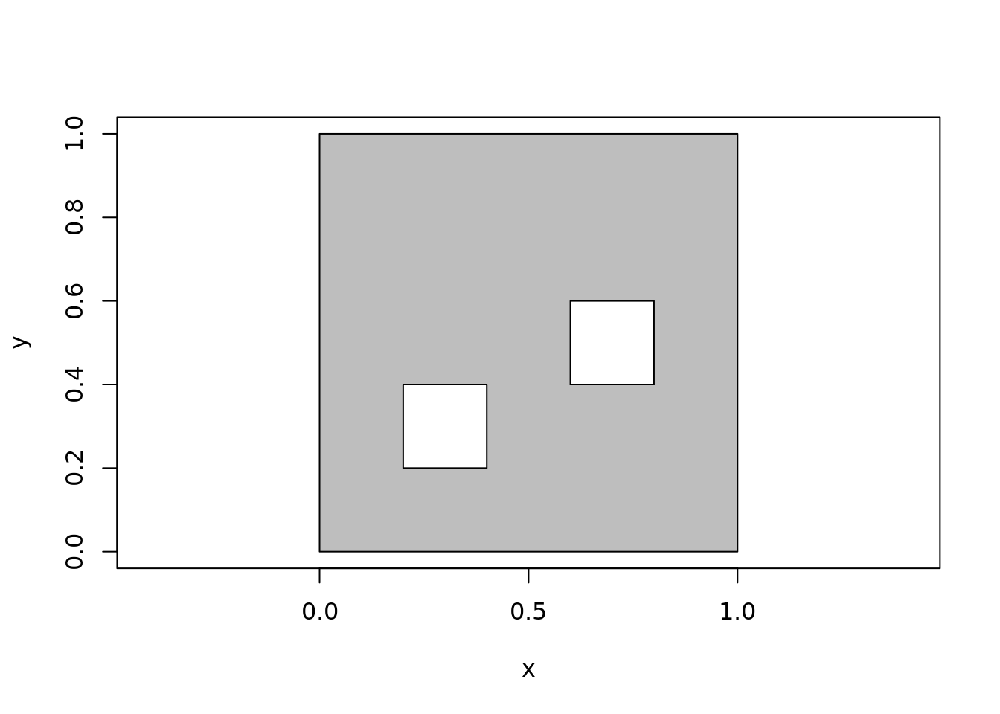
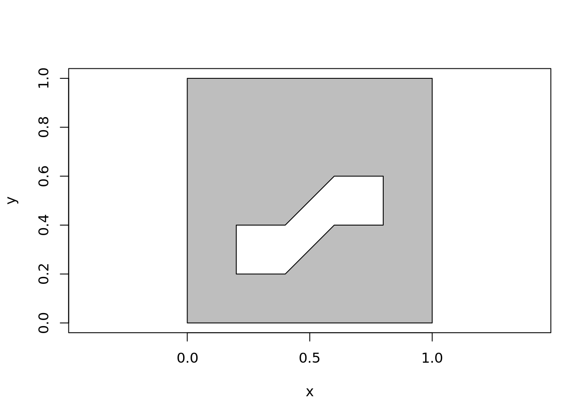

decido
Michael D. Sumner
2018-02-26
WIP
Example
This is a basic example of triangulating a single-ring polygon. The output is a vector of triplet indices defining each triangle.
library(decido)
x <- c(0, 0, 0.75, 1, 0.5, 0.8, 0.69)
y <- c(0, 1, 1, 0.8, 0.7, 0.6, 0)
(ind <- earcut(x, y))
#> [1] 2 1 7 7 6 5 5 4 3 2 7 5 5 3 2
plot_ears(cbind(x, y), ind)
Support for holes is provided by two required arguments numholes and holes. The holes are the starting index of each hole, here in R 1-based convention.
example(earcut, echo = TRUE)
#>
#> earcut> ## single ring polygon
#> earcut> x <- c(0, 0, 0.75, 1, 0.5, 0.8, 0.69)
#>
#> earcut> y <- c(0, 1, 1, 0.8, 0.7, 0.6, 0)
#>
#> earcut> (ind <- earcut(x, y))
#> [1] 2 1 7 7 6 5 5 4 3 2 7 5 5 3 2
#>
#> earcut> plot_ears(cbind(x, y), ind)
#>
#> earcut> ## polygon with a hole
#> earcut> x <- c(0, 0, 0.75, 1, 0.5, 0.8, 0.69,
#> earcut+ 0.2, 0.5, 0.5, 0.3, 0.2)
#>
#> earcut> y <- c(0, 1, 1, 0.8, 0.7, 0.6, 0,
#> earcut+ 0.2, 0.2, 0.4, 0.6, 0.4)
#>
#> earcut> ind <- earcut(x, y, holes = 8)
#>
#> earcut> plot_ears(cbind(x, y), ind)
#>
#> earcut> ## 1) Notice how the hole begins at index 8,
#> earcut> ## hence holes = 8 above, and holes = c(8, 13) below
#> earcut> plot_ears(cbind(x, y), ind, col = "grey", border = NA)
#>
#> earcut> text(x, y, labels = seq_along(x), pos = 2)
#>
#> earcut> ## add another hole
#> earcut> x <- c(0, 0, 0.75, 1, 0.5, 0.8, 0.69,
#> earcut+ 0.2, 0.5, 0.5, 0.3, 0.2,
#> earcut+ 0.15, 0.23, 0.2)
#>
#> earcut> y <- c(0, 1, 1, 0.8, 0.7, 0.6, 0,
#> earcut+ 0.2, 0.2, 0.4, 0.6, 0.4,
#> earcut+ 0.65, 0.65, 0.81)
#>
#> earcut> ind <- earcut(x, y, holes = c(8, 13))
#>
#> earcut> plot_ears(cbind(x, y), ind, col = "grey")
#>
#> earcut> # simpler shape with more than one hole
#> earcut> # the two inside holes are open to each other
#> earcut> # (so we can use the same data for one hole or two)
#> earcut> x <- c(0, 0, 1, 1,
#> earcut+ 0.4, 0.2, 0.2, 0.4,
#> earcut+ 0.6, 0.8, 0.8, 0.6
#> earcut+ )
#>
#> earcut> y <- c(0, 1, 1, 0,
#> earcut+ 0.2, 0.2, 0.4, 0.4,
#> earcut+ 0.6, 0.6, 0.4, 0.4
#> earcut+ )
#>
#> earcut> ind <- decido::earcut(x, y, holes = c(5, 9))
#>
#> earcut> plot_ears(cbind(x, y), ind, col = "grey")
#>
#> earcut> plot_holes(cbind(x, y), holes = c(5, 9), col = "grey")
#>
#> earcut> ind <- decido::earcut(x, y, holes = 5)
#>
#> earcut> plot_ears(cbind(x, y), ind, col = "grey")
#>
#> earcut> plot_holes(cbind(x, y), holes = 5, col = "grey")
library(oz)
oz_ring <- oz::ozRegion(states = FALSE)
ring <- oz_ring$lines[[6]]
indices <- earcut(ring$x, ring$y)
plot_ears(cbind(ring$x, ring$y), indices)
Variants
The actual triangulation obtained depends on where the polygons start. This is complicated, because of the sheer number of possible variants, combinations of starting points among the island and its holes.
Important “edge” cases are degeneracies, holes touching the island or each other, duplicated edges, intersecting edges, zero-length edges, holes actually external to islands, already existing triangles, and existing quadrilaterals (amongst others). We aren’t going to explore those here, and we are reasonably confident that Mapbox has been presented with a rich enough pool of variant polygons to make its library pretty robust. There’s no uniquely “correct” here either, different systems and standards will apply different rules and allow or choose differently.
vecrot <- function(x, k) {
if (k < 0 || k > length(x)) warning("k out of bounds of 'x' index")
k <- k %% length(x)
## from DescTools::VecRot
rep(x, times = 2)[(length(x) - k + 1):(2 * length(x) - k)]
}